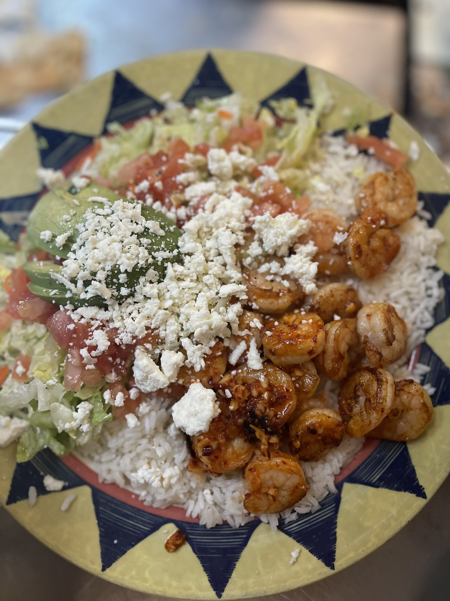

The first popular Seafood dish is called the "Camaron Yucatan" and "Pescado Yucatan". These dishes are two different dishes but they are the same. The "Camaron Yucatan" is made with Shrimp and Grilled Veggies. The "Pescado Yucatan" is served the same way as the Camaron Yucatan but it is Fish instead. You can have the fish, fried or grilled. This plate is served with Mexican rice, lettuce, guacamole, sour cream, and a slice of tomato. The dish with Shrimp is $19.50! The dish with fish is $19.50!
The next Seafood dish is another one of my favorites. It is called, "Camarones Al Mojo De Ajo". This dish is in Spanish and it is Shrimp with garlic. If you like garlic this dish is for you! This dish is served with white rice, sliced avocado, a bed of lettuce with Queso Fresco which is Mexican cheese and chopped up tomatoes. This dish is my boss's favorite dish and she always orders this! This dish is $18.99!
